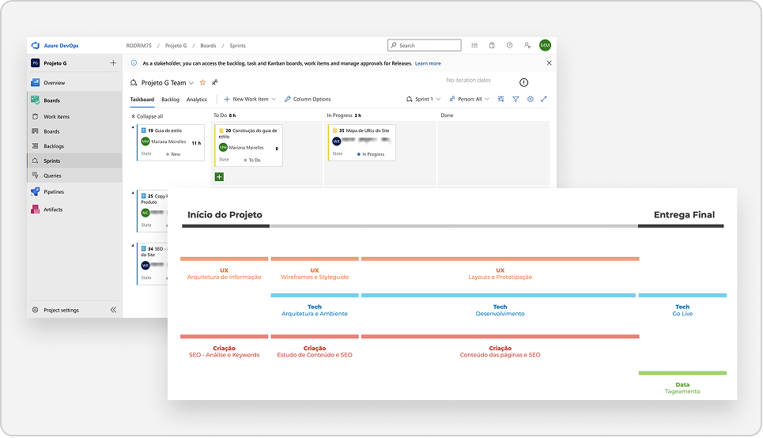
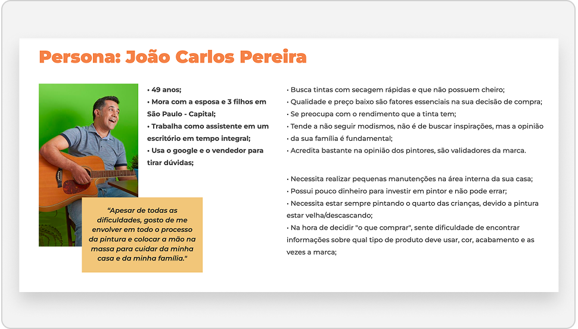
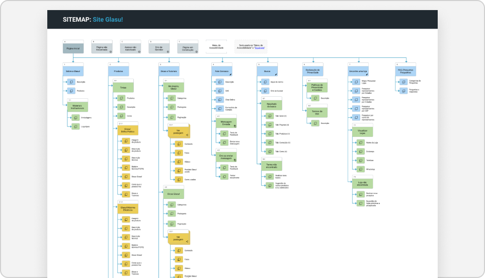
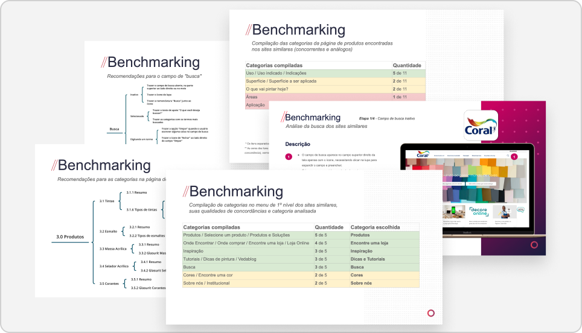
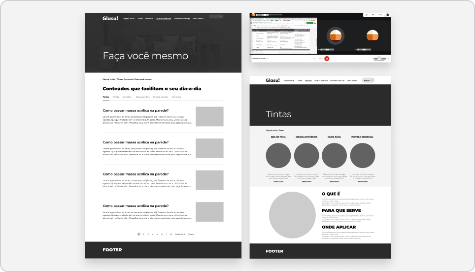
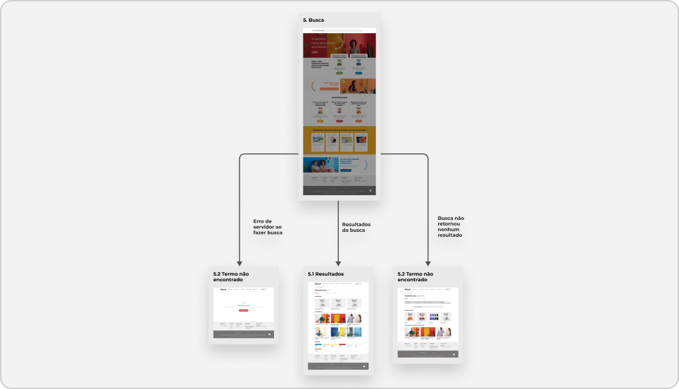
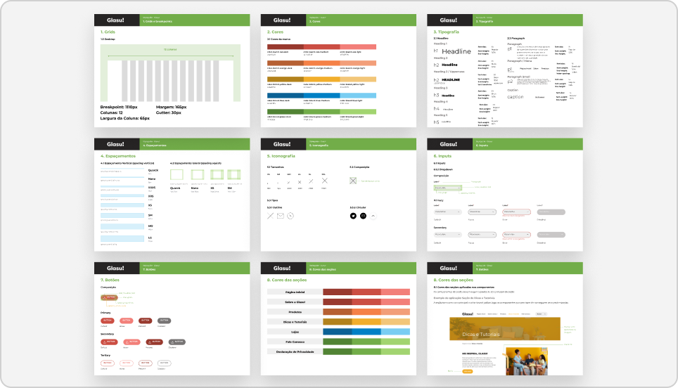
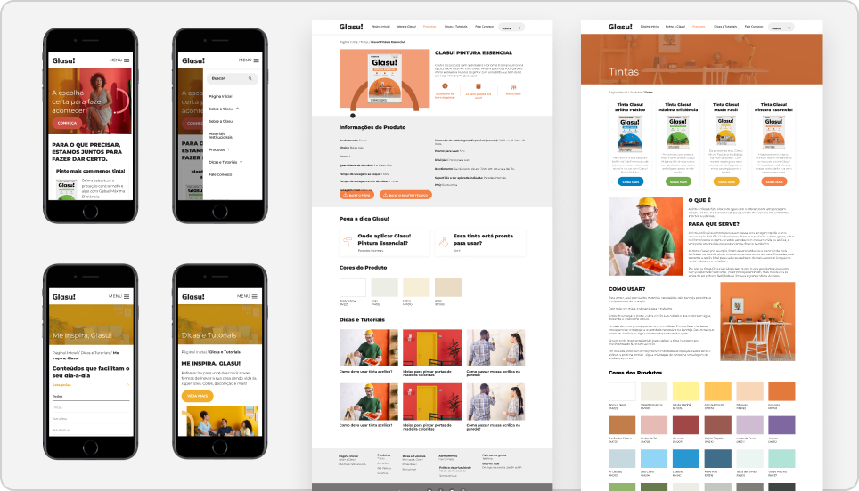
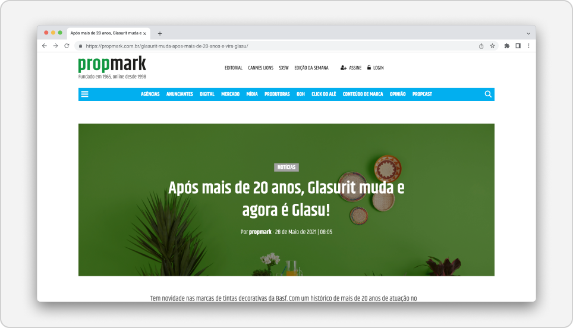

CASE 5 · GLASU! (BASF/SUVINIL)
Strategy, Management and Delivery
Launching a New Retail Brand in 3 Months
- 100%
- On-time delivery (time to market)
- 5
- Different areas working in synergy with the client
- 3 Months
- From project start to site launch
Overview and challenge
In 2021, with the behavior changes brought by the pandemic, BASF/Suvinil identified an expansion opportunity in its economy paint category (Standard) and decided to reposition the Glasurit brand as Glasu!, focusing on a do-it-yourself audience looking for quality and savings.
The context was extremely complex: it required launching a new institutional and mobile website under a non-negotiable 3-month deadline, orchestrating an integrated multidisciplinary team (Creative, UX, Tech, Data and Ad Operations) with no time for extensive primary research.
My role
As Product Design Manager and Senior Product Designer, I led the strategy end to end, from running Discovery (desk research, stakeholder interviews and persona definition) to delivery. Under a non-negotiable 3-month deadline, my focus was to translate BASF/Suvinil's business needs into a simple, intuitive, high-performance experience for a do-it-yourself audience, orchestrating multidisciplinary teams and ensuring delivery quality under pressure.
Activities
Below are some of the activities and stages I carried out in this case.
Agile Governance and Dual-Track
I worked directly with the Project Manager (new to agile methods) and the development manager to structure and implement the dual-track model, the roadmap and the backlog in Azure DevOps across 6 sprints.Implementing Agile Rituals and Processes
I established and led dailies with the multidisciplinary team and the client (BASF/Suvinil), ensuring full alignment and clear communication.Fast, Focused Discovery
Through desk research and stakeholder interviews, I synthesized data to create the persona “João Carlos Pereira” in record time (one week), giving the multidisciplinary team a shared understanding.


Strategic Benchmarking for Decision-making
I ran benchmarking analyses focused on market behavior to support and speed up design decisions in the Information Architecture.Defining the Architecture
Based on the persona's needs, I structured the information architecture with an intuitive menu and a robust search, captured in a sitemap. The model was validated and made tangible through wireframes and a clickable Axure prototype to ensure strategic alignment with the client.Stakeholder Management
I was the main interface and design point of contact with the client (BASF/Suvinil), managing expectations, presenting deliverables and ensuring strategic alignment in every sprint.


Conceptual Wireframes: Integrating Content and SEO
To make sure the design was grounded in performance, I started building conceptual wireframes in active collaboration with the Content and SEO team. The goal was to translate the SEO plan into information hierarchy and start content and copy adjustments early, reducing the risk of rework in the final layout phase.Scaling the Design Team
Given the short deadline and my management of multiple projects, I identified high-fidelity UI production as the main operational bottleneck. To mitigate that risk, I led the recruiting, hiring and management of a dedicated freelance UI Designer, ensuring consistency with the Styleguide, a fast delivery pace and strict adherence to the deadline.Wireflow: Defining the Functional Flow
With discovery and the sitemap defined, the freelance UI Designer produced the high-fidelity wireframes and the wireflow. I provided technical supervision, ensuring the flow was fully aligned with the Information Architecture and the business vision.


Design System as an Accelerator
I made the strategic decision to focus on creating a Styleguide and some base elements of the visual component system, co-creating directly with the Tech team to ensure the design was componentized and reusable (S.O.L.I.D. principle) and that the Styleguide drove scalable development.High-Fidelity Layout
After client approval, we moved on to mobile-first high-fidelity layouts.Impact of the Decision
This approach gave the development team a quick and easy onboarding, keeping delivery speed even with natural team turnover.


Results

On-time Launch (Time to Market)
The main goal was achieved: the complete Glasu! institutional website (desktop and mobile) was successfully launched in 3 months.
Brand and Design Success: Media Coverage
The launch was a national success, exceeding initial expectations, with the website serving as the main digital pillar for the new brand.
High Client Trust and Satisfaction
Despite extreme deadline pressure, process management and transparent communication built a high-trust relationship, praised by the client (BASF/Suvinil): “Synergy between teams and ease in discussing changes and suggestions.” “The connection between teams created a sense of partnership.” “Fast and easy communication between Gauge and Suvinil.”
Success in People Management and Culture
The resourcing model was a success. The freelance UI Designer hired for the project performed exceptionally and was hired full-time by Gauge after delivery. Our work became a case for the company's UBUNTU philosophy, “Gauge is what it is because WE ALL ARE”, the pillar that kept us united and committed to excellence in delivering the Glasu! website to the client.
Learnings
Resource Management Is the Greatest Force Multiplier
In high-pressure scenarios, speed does not come from working more, but from working smarter. Identifying the bottleneck (UI) and using my budget to hire a freelancer was the single decision that made the schedule feasible.
Design Leadership Is Building Bridges, Not Silos
The project's success depended on synergy, praised by the client. My leadership was the link connecting the 5 areas, translating the client's needs (BASF) for the project manager (in the agile process) and for the Tech team (in componentization).
Strategic Clarity > Extensive Research (in Time-to-Market Crunches)
A focused Discovery, even with secondary data, is more valuable than months of primary research when time to market is the main KPI. A clear persona and actionable benchmarking were what aligned the team and enabled fast execution.